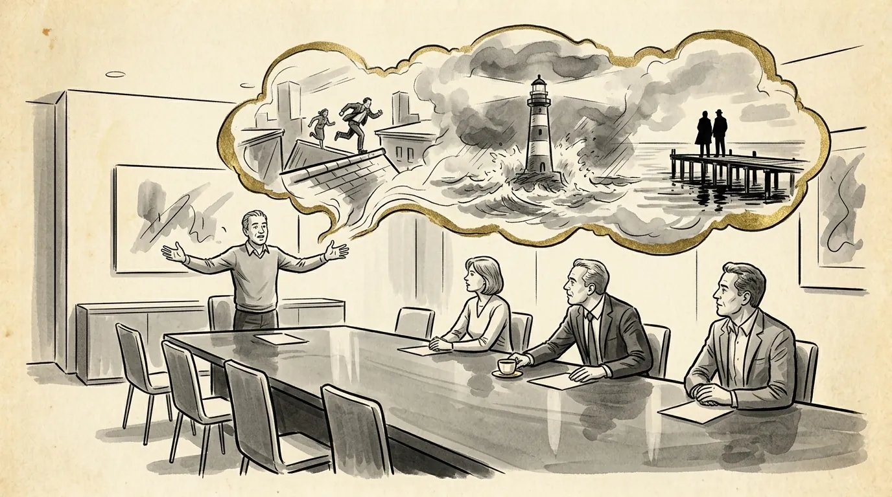

How to pitch a screenplay: lessons from the buyer's chair
I spent years as the executive on the receiving end of pitches. Here's how to pitch a screenplay so it gets read, and so the person who hears it can sell it upstairs.


What a pitch is for
Learning how to pitch a screenplay starts with knowing what the pitch has to do: get your script read, or sell the idea before there's a script at all. A pitch is not a performance of your movie. It's a sales tool with one job, and the job depends on where you are.
If you have a finished script, the pitch exists to make someone want to read it. That's a low bar in theory and a high one in practice, because everyone you meet already has a stack they haven't gotten to. If you're pitching an idea without a script, the pitch has to carry the whole movie. The buyer is deciding whether to pay you to write something that doesn't exist yet, so they need to see it, feel it and believe you can deliver it.
I spent years on the other side of the desk as an executive at Touchstone/Disney, Paramount and Warner Bros., and I bought Face/Off. From the buyer's chair, the question is always the same: can I picture this movie, and can I sell it to the people I report to? Everything below is about answering yes to both.
How to structure a verbal pitch
A strong verbal pitch moves in a clear order: the logline, why you, the world, the main character, the big set pieces, the ending, and a pair of comps. The order matters because each piece sets up the next, and because the listener needs something to hang on to before you start adding detail.
- The logline. Open with the movie in a sentence or two, so the room knows what they're listening to. If you can't do this yet, start with how to write a logline before you book a single meeting.
- Why you. Why are you the person to write this? A personal connection, a job you held, a world you grew up in. Keep it short and real. This is often the part executives remember.
- The world. Where and when are we, and what are the rules? Give the room a picture, not a lecture.
- The character. Who we follow, what they want, what's in their way and what they stand to lose. A buyer can't get excited about plot happening to nobody.
- The big set pieces. Hit the three or four moments that will end up in the trailer: the inciting incident, the midpoint turn, the low point, the climax. Don't walk through every scene.
- The ending. Always tell them how it ends. A pitch without an ending sounds like a writer who doesn't know yet, and the ending is what proves the movie works.
- Comps. Two recent, successful titles that suggest tone and audience. Comps tell the buyer how they'd market it. Pick movies that made money, not cult favorites, and avoid comparing yourself to all-time classics.
Notice what isn't on the list: backstory for every supporting character, your theme stated as a thesis, or a tour of your research. Those can come out in questions. If you've done the structural work, an outline or a treatment, the pitch is mostly a matter of choosing what to leave out.
How long a pitch should be
Plan on two versions: a room pitch of about 10 to 20 minutes, and a 60-second version you can deliver anywhere. Most writers need both, and the short one gets used far more often.
The room pitch is for a scheduled meeting. Executives' attention runs out around the 20-minute mark, a point screenwriter Seth Grahame-Smith made in a talk on pitching at Emerson College, and literary manager Audrey Knox advises TV writers to aim for about 20 minutes and never past 25, so there's time for questions. Feature pitches are often shorter. If yours runs long, cut material rather than talking faster. Rushing makes a pitch feel longer, not shorter.
The 60-second version is the logline, a line about the main character, a line about the ending or the hook, and a comp. It's what you say at a festival, on a panel, in an elevator, or when an agent asks what else you're working on. It's also the version that will travel, which is the point of the section below on what happens after you leave.
If you can't tell it in a minute, you're not ready to tell it in twenty.
How to pitch a movie script by query letter or email
When you can't get into a room, you pitch a movie script in writing: a short, specific email that asks permission to send the script. This is how most new writers reach managers, agents and producers, and it's the first test of whether you can sell your own work.
- A subject line with the hook: genre and premise, or a mutual connection. Not just "Query."
- One line on why them: a project of theirs you admire, or how you met. Show you did your homework.
- The logline: one script, not a menu of five.
- A short bio: lead with your strongest credential, such as a fellowship, a contest placement, a produced short, or professional expertise in the script's world.
- The ask: may I send the script? Don't attach it unless they've said yes. Many companies won't open unsolicited attachments.
That's close to what Audrey Knox lists in her advice on what managers want to see in a query. Assume it will be read on a phone between meetings, and keep it to a few paragraphs. Send to a named person, not a general inbox. If you get no answer, one polite follow-up after a few weeks is fine. Three is not.
Be realistic about who you're querying. Studios and streamers don't accept unsolicited submissions, so queries go to representatives and producers. I've written a separate post on how to pitch a script to Netflix and why their door works the way it does.
General meetings vs. pitch meetings
A general meeting is about you; a pitch meeting is about a project. Confusing the two is one of the most common ways writers waste a good meeting.
A general is a get-to-know-you. An executive or producer liked a script of yours and wants to meet the person who wrote it. It usually runs 30 to 45 minutes, and the real question in the room is whether they'd want to work with you. Come with a short version of your story, a sense of what the company makes, and two or three ideas you can describe in a minute each. If something sparks, they'll ask for more. Don't launch into a 20-minute pitch nobody asked for.
A pitch meeting is scheduled around a specific project, often after a general went well or after your representative set it up. Here you deliver the full pitch, with structure, ending and comps, and then handle questions. Some pitch meetings are for your own idea; others are "open writing assignments," where you pitch your take on material the company already owns, such as a book, an article or a remake.
What happens after you leave the room
If an executive likes your pitch, their next job is to pitch it to their boss, without you there. That's standard practice across the industry, and it's the most important thing to design for.
Most executives can't buy anything on their own. A development executive takes the idea to a vice president, who may take it to the head of the division, who may need sign-off above that. At every step, someone who isn't you is retelling your movie from memory, usually in a couple of minutes, often in a meeting about ten other things.
So make your pitch easy to repeat:
- Lead with a logline they can say word for word. Repeat the title and the hook so it sticks.
- Give them a memorable image or set piece. One moment they'll want to describe.
- Use comps they can say out loud without explaining them.
- Answer the questions their boss will ask: who's the audience, what does it cost, why now.
- Offer a leave-behind if they ask, such as a one-page summary. Some writers send a short follow-up email after the meeting, which also creates a dated record of what was pitched.
Then expect to wait. A quick "we love it" in the room means little; a pass often arrives through your representative, or as silence. Neither is personal. The executive who passed today may call you for a different project a year from now, which is why how you handle the meeting matters as much as the idea.
Pitch mistakes that cost writers the room
Most pitches fail for the same few reasons, and nearly all of them come down to confusing the listener. These are the ones to watch for.
- Burying the logline. Starting with the theme, the backstory or the research leaves the room wondering what movie they're hearing about.
- Telling every scene. Detail is not momentum. Hit the big moments and trust the room to fill in the rest.
- Withholding the ending. "You'll have to read it to find out" is a teaser, not a pitch.
- Reading from pages. Use notes if you need them, but look up. A pitch is a conversation.
- Not knowing the buyer. Pitching a micro-budget horror film to a company that makes family movies tells the room you didn't prepare.
- Arguing with questions. A question is interest. Answer it, and save any defense of your choices for the rewrite.
- Overstaying. When the pitch is done, stop. Let them talk.
And practice out loud, many times, in front of people who will tell you where they got lost. The pitch you think you're giving and the one the room hears are rarely the same until you've rehearsed it.
Frequently asked questions
How long should a screenplay pitch be?
For a scheduled pitch meeting, aim for about 10 to 20 minutes, leaving time for questions. Also prepare a 60-second version you can give anywhere, because that's the one you'll use most.
Should I tell the ending in a pitch?
Yes. Always tell the buyer how it ends. The ending proves the story works, and a pitch that holds it back sounds unfinished.
Can I pitch a movie idea without a finished script?
You can, but buyers generally pay for unwritten ideas from writers with a track record. If you're new, a finished script plus a strong pitch is the most reliable way in.
What's the difference between a general meeting and a pitch meeting?
A general meeting is about getting to know you as a writer, with short descriptions of a few ideas. A pitch meeting is about one specific project, delivered in full with structure, ending and comps.
Can you help me prepare a pitch?
Yes. My logline and idea punch-up is $175 for a 30-minute call, and for deeper pitch, meeting or career strategy I offer legal, financial, production and career help at $200 an hour.